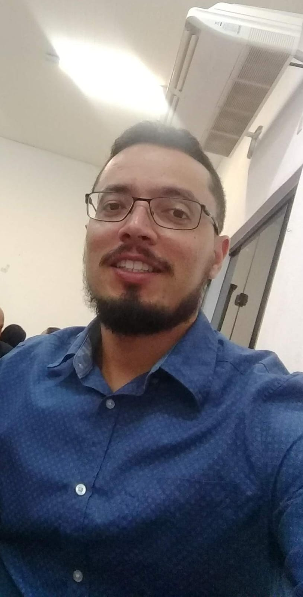

Sejam muito bem vindo, eu sou o
JEFFERSON LIMA
Atualmente, estou em uma jornada de aprendizado como estudante de Análise e Desenvolvimento, e no curso Fullstack do Professor Kelson, onde busco aprimorar minhas habilidades e conhecimentos na área de tecnologia. No momento atuo como suporte N2 em uma empresa que presta serviços para cartórios. Nesse papel, tenho a oportunidade de resolver problemas complexos e oferecer soluções eficazes, garantindo que nossos clientes tenham a melhor experiência possível. Estou sempre em busca de novos desafios e oportunidades de crescimento, tanto na minha carreira quanto na minha formação acadêmica. Estou animado para compartilhar mais sobre minha trajetória e aprender com todos vocês!
Fique por dentro das minhas conquistas e projetos! Acesse meu LinkedIn e GitHub